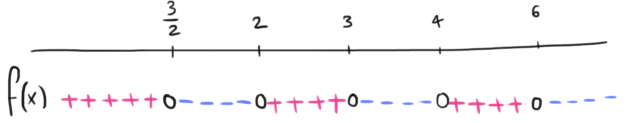

Compiti per casa
Esercizio 1
Consideriamo la funzione
\[
f(x) =
\begin{cases}
-4x - 1 \qquad &\text{se} \,\,\, x \leq 0
\\\\
5x - 3 &\text{se} \,\,\, x \gt 0
\end{cases}
\]
-
Calcolare \(f(-1)\), \(f(0)\) ed \(f(1)\).
Soluzione:
\(f(-1) = 3\), \(\,\,f(0) = -1\), \(\,\,f(1) = 2\)
-
Studiare il segno del polinomio \(-4x - 1\) al variare del valore di \(x\).
-
Studiare il segno di \(5x - 3\) al variare del valore di \(x\).
-
Studiare il segno della funzione \(f\) al variare del valore di \(x\).
(Usate i risultati ottenuti nei punti B e C.)
Esercizio 2
Consideriamo la funzione
\[
f(x) =
\begin{cases}
2x^2 -7x + 6 \qquad &\text{se} \,\,\, x \leq 3
\\\\
-x^2 +10x -24 &\text{se} \,\,\, x \gt 3
\end{cases}
\]
Studiare il segno di \(f\) al variare del valore della \(x\).
Soluzione:
Il segno della funzione è dato dal seguente grafico
